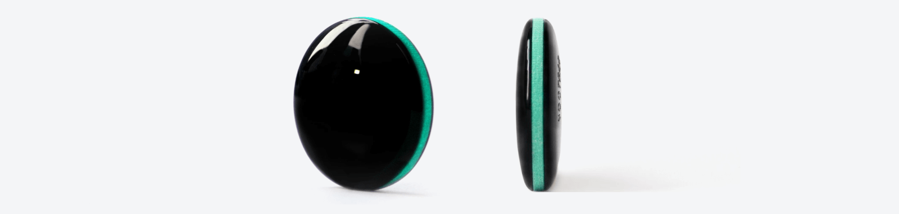

Základom nášho riešenia je Meteor – jediný senzor, ktorý prináša aj amatérskym futbalistom detailné herné a pohybové štatistiky. Nosí sa na lýtku a počas zápasu nepretržite zaznamenáva detailné údaje o pohybe hráčov. Pomocou umelej inteligencie dokáže identifikovať všetko, čo sa v zápase udialo: pohyb po ihrisku, prihrávku, strelu či dribling. Neurónová sieť následne vyhodnotí tvoj výkon na základe 12 kritérií.
Prehľad o tvojej rýchlosti, vytrvalosti a technických štatistikách. Porovnaj sa s ktorýmkoľvek spoluhráčom.
Ak Meteor používajú v zápase oba tímy, získate aj porovnanie tímovej výkonnosti.
Tvoje výkony v zápasoch prepočítame na výkonnostný rating ako vo FIFA a PES a tvoríme aj dlhodobý rebríček. Čím lepšie hráš, tým vyššie stúpaš.
Meteor váži len 9 gramov a je hrubý len 8 milimetrov, takže nijako neobmedzuje v pohybe.
Meteor je odolný voči dažďu, mrazu aj horúčave, žiadne výhovorky!
Elastická páska so senzorom sa dá nasadiť na lýtko aj cez štucne, termoprádlo alebo ortézu.
Po každom zápase, ktorý odohráš s Meteorom, ti vypočítame:
Tvoj profil a výkonnostný rating aktualizujeme po každom zápase a zohľadňujeme 12 parametrov:
Na začiatku sezóny priradíme každému hráčovi jeho Meteor číslo. Pred zápasom si od manažéra ihriska vezmeš senzor so svojím číslom a odohráš zápas. Meteor po zápase vrátiš a na druhý deň sú tvoje štatistiky pripravené online.
hello@footstat.sk – +421 902 931 208